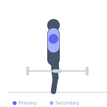
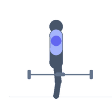

Exercise guide / Barbell Front Raise
Barbell Front Raise
The barbell front raise targets the anterior deltoid by raising a barbell from the thighs to shoulder height in front of the body. The bilateral nature and pronated grip load both anterior deltoids simultaneously and provide a simple progressive overload path compared to dumbbell variations. It is a straightforward anterior deltoid isolation exercise suitable for adding volume to shoulder training.
Primary muscles
deltoid anterior
Secondary muscles
pectoralis major clavicular
trapezius upper
Stabilizers
erector spinae
Equipment
Standard Barbell


Starting position
- Stand upright holding a barbell with a pronated (overhand) grip at approximately shoulder width. The bar hangs at thigh level with arms nearly straight.
Setup
- Use a relatively light load. The anterior deltoid is already heavily stressed from pressing — treat this as supplemental volume work.
Steps
- Step 1: Hold the bar at thigh level with an overhand grip.
- Step 2: Keeping the arms nearly straight (slight elbow bend), raise the bar in front of the body.
- Step 3: Raise until the bar is at shoulder height or slightly above.
- Step 4: Pause at the top briefly.
- Step 5: Lower under full control to the thighs.
Coaching cues
- Arms like a robot — controlled arc
- No lean back
- Stop at shoulder height
Breathing
- Exhale as you raise, inhale as you lower.
Range of motion
- Thigh level to shoulder height (90 degrees).
Tempo
- 2-0-3-0
Common mistakes
- Using body momentum by leaning back or rocking
- Raising too high — above shoulder level recruits the traps excessively
- Bending the elbows too much, turning it into a curl-raise hybrid
Safety
- Keep the lower back neutral — do not hyperextend as the bar rises
Training
- hypertrophy: 10–15 reps
- hypertrophy: 3–4 sets
- Rest: {'hypertrophy': 75}